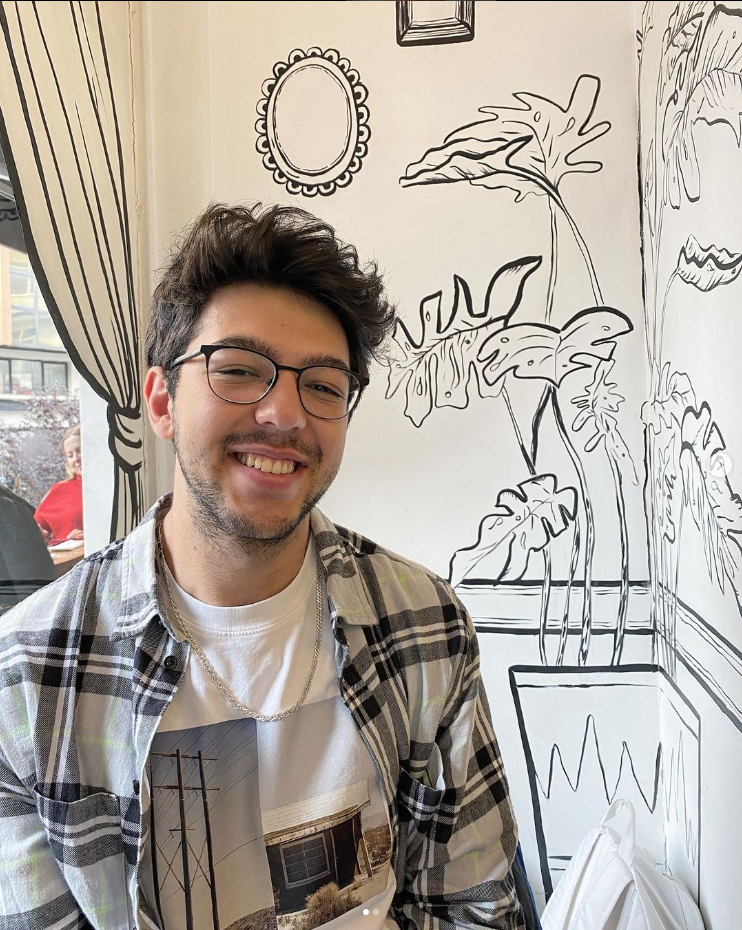

Furkan Komaç

Summary
I am a dedicated and highly motivated Computer Science undergraduate at
Bilkent University, with a strong passion for Artificial Intelligence and
Machine Learning. My academic background is fortified with my GPA and a
notable achievement (101th place among 3 billion participants) in a
national university entrance exam. My experience extends to cognitive
computational neuroscience research, and I possess a diverse skill set in
areas such as sales, marketing, and editing. My enthusiasm for AI and ML
drives me to explore innovative applications in these fields.
Education
-
Ihsan Dogramaci Bilkent University, Bachelor's Degree in Computer
Science | July 2021 - Present
-
Comprehensive Scholarship (101th place in Enterance Exam has
roughly 3 billion participant)
- GPA: 3.2/4
-
Isparta Suleyman Demirel Science Highschool, Highschool Education |
2017 - 2021
Work Experience
-
Undergraduate Research Assistant - UMRAM
May 2023 - Present
-
Assisting on various projects hardly focus on machine learning and
neural networks at Cognitive Computational Neuroscience Lab
-
Summer Internship - Huawei Turkey
Jul 2023 - Aug 2023
-
Summer Internship at Operation and Maintenance Center (OSS
Department) in Huawei
-
Sales and Marketing Specialist - Radio Bilkent
Jan 2023 - Present
-
Planning and executing advertising campaigns and promotional
activities to reach the target audience
-
Editor - Kampuste Ne Var?
Jan 2023 - Dec 2023
-
Arranged the writings sent by students to Kampüste Ne Var, which
provides a new income model for university students through writing
Skills
- Java: ⭐️⭐️⭐️⭐️
- C++: ⭐️⭐️⭐️⭐️⭐️
- Python: ⭐️⭐️⭐️⭐️⭐️
- HTML: ⭐️⭐️⭐️⭐️
- JavaScript: ⭐️⭐️
- Microsoft Office: ⭐️⭐️⭐️⭐️⭐️
- MATLAB: ⭐️⭐️⭐️
- Adobe Premiere: ⭐️⭐️⭐️
Other
© Furkan Komaç. all rights reserved.